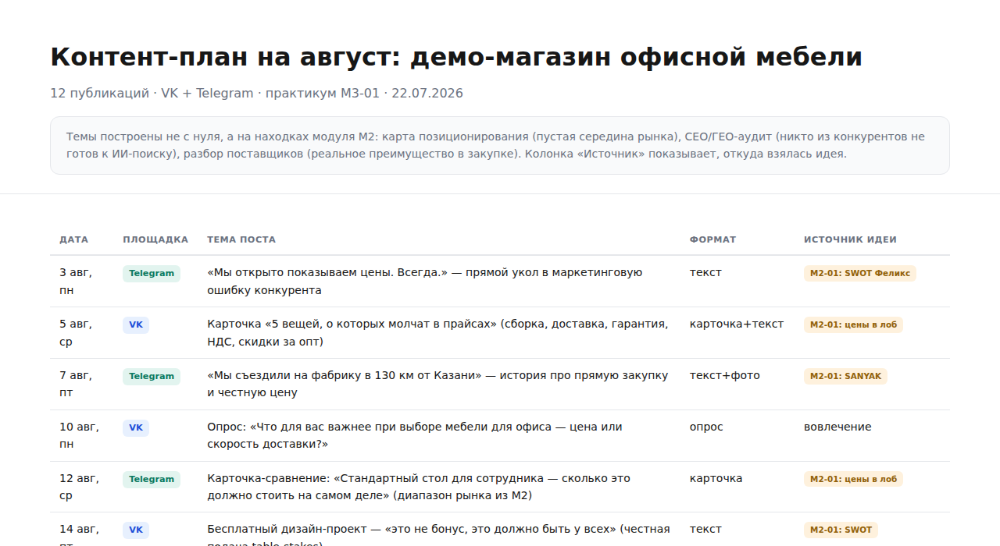
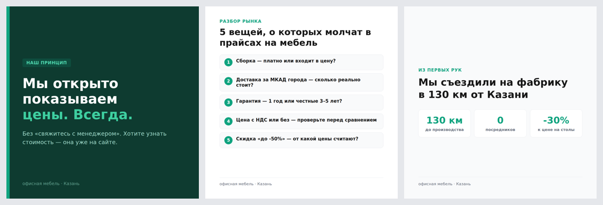

Контент-план на месяц для VK и Telegram, построенный на реальных находках из М2 (карта позиционирования, СЕО/ГЕО-аудит). Плюс несколько полностью готовых постов и визуальные карточки — без генераторов картинок, просто аккуратной вёрсткой.
Контент без опоры на данные — стрельба вслепую: «сделай нам посты» превращается в нейтральный корпоративный текст, который никто не читает. Контент на основе разбора конкурентов — прицельный: ты уже знаешь, в чём слабость рынка и в чём твоя реальная сила, осталось об этом рассказать.
Находки из М2 (карта позиционирования, сравнение цен, СЕО/ГЕО-аудит) — свои или из демо-примера этого курса. Если своих ещё нет — самое время сделать М2, контент-план на пустом месте выйдет слабее.
Агент не может угадать тон, если ты его не сказал:
Пишем от лица нашего магазина офисной мебели. Тон: прямой, без канцелярита, немного дерзкий по отношению к тому, как ведут себя крупные конкуренты, но без перехода на личности. Целевой читатель — собственник или офис-менеджер малого бизнеса.
У нас есть разбор рынка: карта позиционирования показала пустую середину (умеренная цена + честное позиционирование), а СЕО/ГЕО-аудит — что никто из конкурентов не готов к ИИ-поиску. Собери контент-план на месяц: 12 постов, VK и Telegram чередуются, три в неделю. Для каждого — тема и то, из какой находки она взялась.
Результат на демо-примере (12 публикаций, темы явно привязаны к находкам М2):

Каждая тема — не «придумай что-нибудь про мебель», а прямое следствие разбора рынка: открытые цены против «цены по запросу» у конкурента, честная закупка у ближайшей фабрики, эксперимент с ИИ-поиском.
Открыть план целиком: content-plan.html
Учебный момент. Колонка «источник идеи» — не формальность. Она превращает контент-план в проверяемый документ: любой пост можно спросить «а почему мы вообще об этом пишем?» — и есть ответ, а не «ИИ так придумал».
Темы в календаре — ещё не посты. Попроси развернуть конкретные даты целиком:
Распиши полностью три поста из календаря: 3, 7 и 17 августа. Формат: хук → история/польза → вывод → вопрос читателям.
Пример готового поста (Telegram, тема — из SWOT конкурента в М2-01):
Задолбало видеть на мебельных сайтах «цены по запросу»?
Мы тоже. Поэтому у нас на сайте — цены сразу, без формы
«оставьте телефон, мы перезвоним»...
[...]
А вы сталкивались с таким при выборе мебели? Расскажите
в комментариях 👇Полный текст всех трёх постов: posts-draft.html
Нет доступа к генератору изображений — не беда. Попроси агента сверстать HTML-карточку в размере поста (квадрат 1080×1080) в цветах бренда и сохранить как картинку:
Сделай карточку для поста про открытые цены: тёмный фон, крупный заголовок, короткая подпись, наш зелёный акцент. Сохрани как PNG 1080×1080.

Три карточки, собранные вёрсткой, а не генерацией картинок: контролируешь каждый пиксель и цвет бренда, ничего не «плывёт» непредсказуемо, как у генеративных изображений.
Упакуй процесс в скилл «контент-план»: чтобы каждый месяц я мог сказать «собери контент-план на этот месяц» — и ты бы сама спросила про свежие находки из разбора рынка, если их нет.
| Симптом | Причина | Решение |
|---|---|---|
| Посты звучат как «типовой ИИ-контент» | Голос бренда не задан | Явно опиши тон, целевого читателя, что нельзя говорить |
| Темы календаря ничем не обоснованы | Контент собран без опоры на разбор рынка | Тяни темы из находок М2 — так проще объяснить, зачем каждый пост |
| Карточка выглядит перегруженной | Слишком много текста на одном визуале | Один заголовок, одна мысль, максимум 3 коротких пункта на карточку |
| Пост с двумя призывами сразу | Не ограничили формат при запросе | Один явный CTA/вопрос на пост, не смешивай |
Собери контент-план на месяц для своего реального бизнеса, отталкиваясь от собственного разбора рынка (свой М2, если уже делал, или проведи заново). Распиши три поста полностью и сделай хотя бы одну карточку. Покажи человеку, который хорошо знает твою аудиторию, — и запиши, какой пост он бы не одобрил.
Самое ценное в этом уроке — не сами посты, а колонка «источник идеи» в календаре. Без неё контент-план — это красивый список тем. С ней — это документ, который можно защитить перед партнёром: «мы пишем про открытые цены, потому что в разборе рынка увидели именно эту слабость у крупного конкурента» звучит совсем иначе, чем «нам показалось, что это хорошая тема».